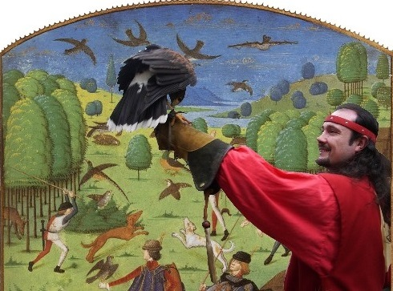
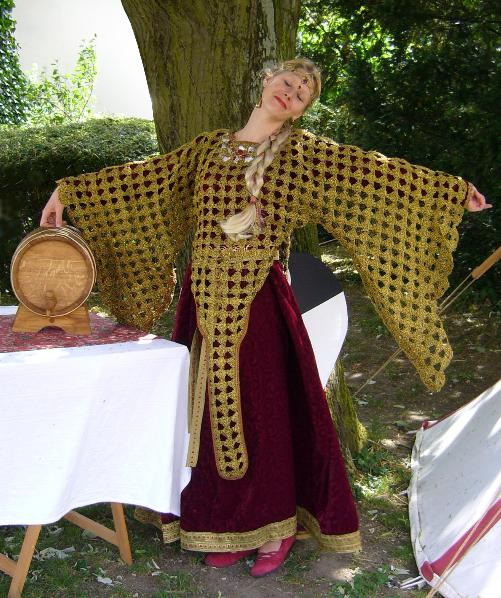
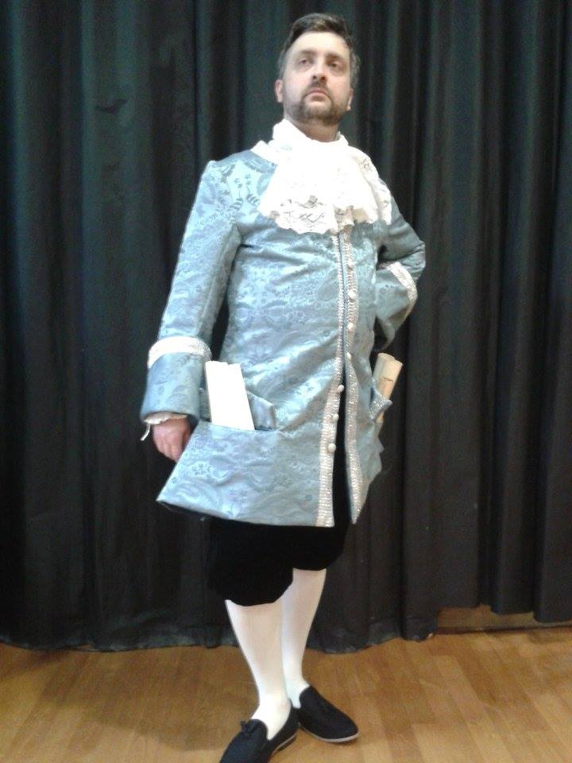

Yves Houllier: Président
Cela a commencé comme un Roman courtois.
A l'origine ils étaient trois cavaliers, une gente dame et ses chevaliers servants se rendant à la Fête médiévale…
Très rapidement, l'envie de prendre les choses en mains
, plutôt que de simplement participer à des événements, nous a poussés à réunir des compagnes et des compagnons d'aventures aux multiples talents.
Nos spectacles sont vivants.
Pour l'époque Médiévale, nous avons décidé d'évoquer la courtoisie, les commandements de la chevalerie, les règles de Fin'amor, les rapports complexes entre le chevalier et sa dame, les relations entre gens du peuple et noblesse...
Et, sous le patronage de Dame Fortune, nous avons conçu puis proposé des animations et des spectacles qui ont comme point commun la Fête et le plaisir de se costumer.
Dès le début, deux rencontres furent décisives:
Daniel Rochet, un vrai seigneur, bien connu du petit monde des associations de reconstitution, guide et membre d'honneur à vie de Fortuna.
Alexandre Bourguignon, escrimeur, comédien, metteur en scène, auteur, ami enfin, qui nous aide en nous confiant certains de ses textes et en nous conseillant.
Cette envie d'aventures médiévales, déboucha sur la création de l'association Fortuna en 1997. Une création faite de rencontres avec des partenaires qui nous ont suivis dans des projets pour venir enrichir de leurs talents nos savoir-faire.
La chance (si avec ça vous n'avez toujours pas compris d'où vient le nom de notre association!) fut une compagne fidèle en permettant que notre route croise celle de personnages exceptionnels.
En quittant l'époque médiévale et en remontant le temps, nos prestations sont alors plus axées sur l'escrime et le théâtre ( Commedia dell'arte ).
llllllllll
Membres
Etienne Bochard: Vice-président, chef opérateur-monteur, ingénieur son et lumières
Céline Laneres: Trésorière
Tony le napolitain: Responsable de la sécurité et des recouvrements, négociateur en chef
Julien Bouchoux: Contrat d'insertion professionnelle
